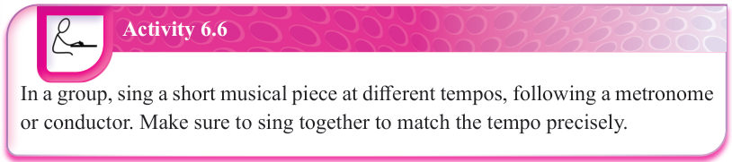

(e) Observing correct timing: To achieve this, singers should accurately observe the rhythm of the song so as to sing with correct timing. They should also carefully follow the ensemble conductor to align with the tempo of the song.
(f) Proper breath control: Proper breath control is very essential in a vocal ensemble as it helps singers sustain notes and finish song phrases at the right time with the right sound. Correct body posture during singing enhances breath control.
(g) Correct diction and articulation: Singers must observe correct pronunciation of words and articulation of consonants and vowels while singing. This ensures that the lyrics are well heard by the audience, hence the message of the song is well understood.
Activity 6.6

In a group, sing a short musical piece at different tempos, following a metronome or conductor. Make sure to sing together to match the tempo precisely.
Arrangement of singers for a vocal ensemble
When performing in a vocal ensemble, it is important for singers to properly arrange themselves in a specific formation on the stage to create a good performance. The decision on formation can be determined by several criteria, including the total number of singers in the group. For example, one of the most preferred formations in vocal choir ensembles is “curved rows”. This allows those at the ends to sing towards each other, and easily hear those on the other side of the group. It also allows the conductor to easily see and hear everyone in the choir. In curved rows, singers can be arranged by voice; that is, soprano, alto, tenor and bass. For example, for a small choir of twelve singers, they can be arranged in just one row. Sopranos will be positioned on the left. Moving to the right, follows the altos, the tenors and finally, the basses. Three members of each voice will be placed in the row. Figure 6.1 shows an arrangement for a choir with a small number of singers.
